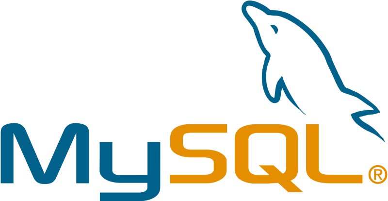

MySQL – wolnodostępny, otwartoźródłowy system zarządzania relacyjnymi bazami danych.
MySQL rozwijany jest przez firmę Oracle.
Wcześniej przez większość czasu jego tworzeniem zajmowała się szwedzka firma MySQL AB
Twórca strony: © Andrzej Stefaniuk